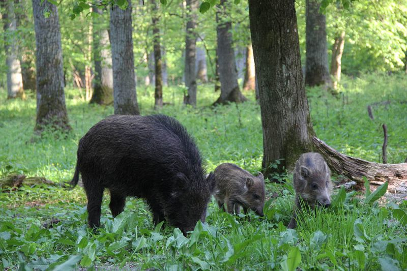

Буковые леса Карпат. Это единственный в Украине объект, отнесенный к списку объектов природного наследия ЮНЕСКО. В наше время это едва ли не единственные леса в Украине, которые никогда не подлежали никаким рубкам. Поэтому здесь можно увидеть лес в настоящем понимании этого слова – не посаженные ровными рядами одновозрастные деревья, как мы привыкли видеть повсеместно, а многовековые разноярусные древостои, с исполинскими буками в несколько обхватов и сгнивающими завалами из упавших великанов. К объекту ЮНЕСКО входит 5 заповедных массивов Карпатского биосферного заповедника и 1 – в Ужанском национальном природном парке; еще три лесных участка этого объекта находятся в Словакии.
Еловые («смерековые») пралеса Карпат. Менее известны широкому кругу еловые леса растут на высотах выше 1200 м и поэтому не подлежат интенсивной хозяйственной деятельности. Они разительно отличаются от привычных нам ельников искусственного происхождения, посаженных на более низких высотах. В отличие от последних, чрезвычайно сомкнутых и бедных, размах островерхих гигантов в природных еловых лесах впечатляет. На покрытых мхом упавших и сгнивших стволах рядами тянутся вверх молодые деревья, так мертвое становится основой живого. На сухих стволах заметны многочисленные дыры – следы работы уникального трехпалого дятла, который в Украине живет только здесь. А летом в ельниках уйма черники и грибов!

Цуманская пуща. Один из самых известных лесных массивов Полесья расположен в пределах одноименного национального парка, в Киверцовском районе Волынской области. Пущами всегда называли особенно глухие, дремучие леса. В отличие от большинства других лесов Полесья, здесь преобладают не хвойные, а дубовые широколиственные насаждения. Украшением этого парка, кроме вековечных лесов, являются зубры, – это чуть ли не единственный лес в Украине, где можно встретить этих великанов в природе. Увидеть их легче всего зимой возле площадок для подкормки. Кроме них, в пуще очень много других животных – кабанов, оленей, косуль.
Поясковский лес. Старейший лес Полесья, растет в Олевском районе Житомирской области и в чем-то напоминает карпатские леса. Отдельным постановлением от 1924 года здесь были запрещены все виды рубок, чтобы посмотреть, каким образом будет развиваться лес в заповедном режиме. Несмотря на отдельные браконьерские порубки, лес является прекрасной иллюстрацией красоты полесских лесов, приближенных к пралесам. Единственной проблемой является то, что ныне в пределах заказника начали нелегально добывать янтарь.
{kind=link}